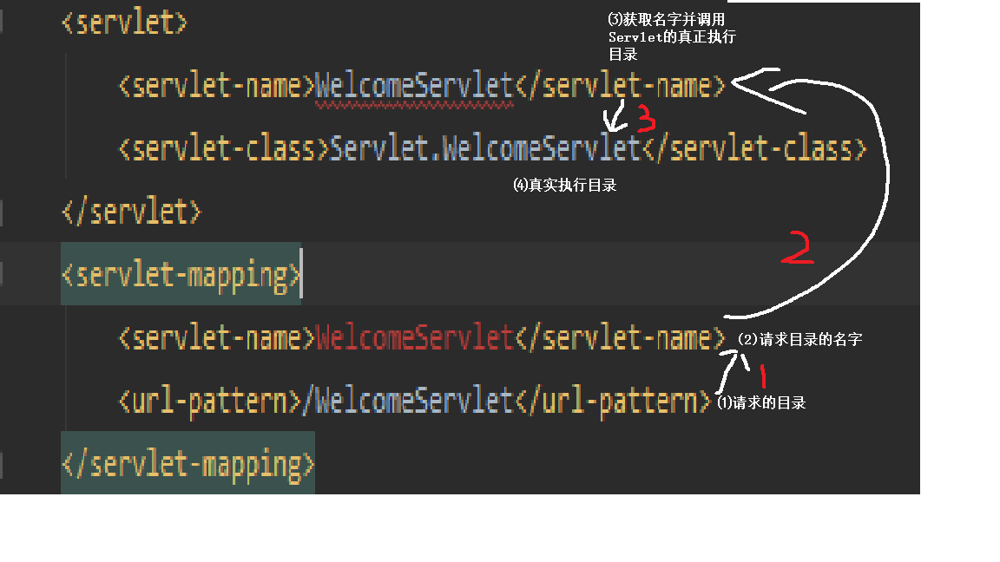

Servlet学习笔记
一、Servlet的前身
servlet取代了以往JSP用以将前后端分离 让JSP->java->jsp 变为用MVC模式中的controller使用servlet来进行前后端的交互。所谓的MVC模式就是由 M：model，模型 V：View，视图 C：Controller，控制器组成 简单理解M为具体实现的代码，V为前端的页面 C为处理两者之间交互的代码。
二、具体使用
若想使用servlet需要在web.xml中定义相关配置，如图 而Servlet3.0 可以直接在定义的Servlet中写注解 : @WebServlet(“2.5时url-pattern里的值”)
三、Servlet的分析
生命周期
1.加载2.初始化：init()，该方法会在Servlet被加载并实例化的以后执行服务：service()->doGet(DoPost)
3.服务(->doGet()doPost：。调用几次，则执行几次
4.销毁：def()，Servlet被系统回收时执行卸载
5.卸载
加载与卸载由编译器处理，我们无需在意，主要需要注意的时初始化会在调用的时候运行一次，也可以预先定义在打开网页调用。
继承关系
这种设计模式方便了在需要重写特定方法时不用过多的在意其父类的所有方法，而只用重写需要用到的方法，如DoPost()和DoGet()。